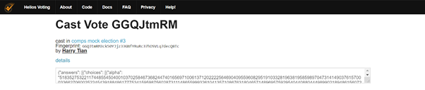

As a solution to Smyth and Cortier’s attack to reveal votes, we propose an overkill measure of hiding the encrypted ballots and disabling the ballot verification feature. While disabling the attack, this is an egregious compromise to Helios’ key open-audit verification feature. However, in the process of experimenting with the degree of overkill, we found interesting implications in the confidentiality and integrity of Helios. This led us to develop a new customizability feature to Helios.
To completely remove Helios’ open-audit feature is not only difficult, as it requires large changes to the code, but also unnecessary for our demonstration purposes. To disable the Smyth and Cortier attack, it suffices to hide the encrypted ballots from the public.
A voter's encrypted ballot is shown in the vote’s cast-vote page. An example is shown in the image below. When the ‘details’ link is clicked, the encrypted ballot is revealed.
The cast-vote page can be accessed in two ways. One is in the Voters and Ballot Tracking Center page (in the image below), which can be accessed from the election. The Ballot Tracking Center (BTC) contains a table of all voters’ name or alias, their Smart Ballot Tracker, which is a “fingerprint” of the encrypted ballot, and their encrypted ballot, which can be accessed through the ‘view’ link. The other way to access the cast-vote page is through a link sent to the voter’s emails after a vote is casted.
To completely hide encrypted ballots, we can simply disable the ‘details’ link in the cast-vote page. This can be done by commenting out line 16 in helios/templates/castvote.html. We do not need to make changes to the BTC, although the Smart Ballot Trackers are now redundant. This is our baseline defense to the attack.
We further derived a few extension defenses. Recall the two different ways to access the cast-vote page, one through the BTC and one through voters’ emails. The BTC is available to the public while voters’ emails are private. This naturally leads to a convenient separation between the public and voters’ themselves. That is, we can disable the public’s access to the cast-voter page while maintaining the voters’ access. The result of this is that only voters themselves can access their own encrypted ballot. In turn, Helios’ verifiability feature is not completely removed, but restricted to voters only. This is our first extension defense. It negates the Smyth and Cortier attack as encrypted ballots can not be accessed without coercing a target voter or hacking their email.
The implementation is to remove the link to the cast-vote page in the BTC along with the Smart Ballot Tracker fingerprint, since the fingerprint can be used to derive the cast-vote page html address. This can be done by editing line 154 in helios/templates/voters_list.html. An implementation is shown in fig. 3
The second extension defense is to hide encrypted ballots but only when the election is open. This defense also preserves Helios’ open-audit feature to some extent: anyone can verify any votes, but only after the election is closed. The practicality of this defense is less apparent compared to the previous extension defense. While the Smyth and Cortier attack is impossible during the election, verifiability of the election after it closes may be less helpful to the integrity of the election. Implementation of this defense can be done by using the election.voting_has_stoppped boolean in Helios’ django model.
We quickly found some patterns. The baseline method to completely hide encrypted ballots was the “most overkill” measure, while the two extension defenses preserved encrypted ballots in different ways. The second extension defense was straightforward in that it added a dimension of time to the defense. But the first extension defense of restricting verifiability to voters was far more interesting. In fact, it ties directly to two properties of electronic voting systems introduced by Smyth and Cortier:
Individual verifiability: A voter can check that her own ballot is published on the election’s bulletin board.
Universal verifiability: Anyone can check that all the votes in the election outcome correspond to ballots published on the election’s bulletin board.
Helios’ open-audit feature corresponds exactly to universal verifiability, although in their research they used the term “true verifiability”. Our first extension defense happens to satisfy the criteria of individual verifiability. Along with the baseline defense, Helios’ open-audit feature and our measure of restricting verifiability to voters form a scale of verifiability where the varying factor is “who can audit which votes”. A visualization is shown below.
However, the varying factors on this scale are not just verifiability. Our baseline defense disables the verifiability feature, but also completely hides encrypted ballots, in turn guaranteeing full ballot secrecy. So, in the opposing direction of verifiability is ballot secrecy. Indeed, the two are in conflict, which is even acknowledged by the Helios contributors : “In cryptographic voting protocols, there is an inevitable compromise: unconditional integrity, or unconditional privacy” (Adida, 2008, p.336). In this case integrity corresponds to verifiability and privacy to ballot secrecy. Helios’ approach is to guarantee unconditional integrity by ensuring full transparency of the election and tallying process, since anyone can verify any vote. On the other hand, our baseline defense, by not revealing any encrypted ballots, would provide unconditional privacy, or--using the terms of our threat model--confidentiality. Thus, we can construct an updated scale, as shown below.
Currently there are only three discrete values on our scale, but more options are possible. For example, between universal verifiability and individual verifiability, there may be a midpoint feature of allowing voters to verify any votes.
Since we already have all three values on our scale readily implemented, we went a step further to combine them to a customizability feature such that when creating an election, the administrator can choose a point on the scale. That is, one can decide whether their election has universal verifiability, individual verifiability, or no verifiability; our scale of verifiability and ballot secrecy is thus one parameter of the customizability feature. We added another parameter of before and after the election closes, taken from our second extension defense. Thus, our customizability feature is shown in (1a) with parameters underlined. As a comparison, (1b) summarizes Helios’ open-audit feature.
(1a)
(1b) Anyone can verify any voters’ votes at any time.
Since the baseline and extension defenses were already implemented, the remaining work was to convert the defenses into parameters in a Helios’ election. To do this we added two fields to Helios’ Django form and Django model; details about the modifications are on our github. The updated create-election form is shown below.
It is worth noting that we initially considered two versions of the customizability feature. The first is the one described before, granting users full customizability of the parameters. The other one being to offer to users only a few combinations of the parameters. The reasoning is that some combinations are less meaningful than others, such as allowing anyone to audit before the election closes but allowing no one to audit after the election closes. We ultimately decided on the full customizability version for two reasons. The first being our trust to the user: people that create elections are likely to be familiar with concepts like verifiability and ballot secrecy, so we trust that they will not make meaningless or silly decisions. The second is that, even if users are not familiar with election security, full customizability exposes the user to potentially too much information and forces them to modify all the parameters; then, the user is more likely to learn the advantages and disadvantages of each option and familiarize themselves with integrity and privacy.
Our initial planning of the customizability feature had an additional parameter that differentiated between admin and non-admin permissions. However, we encountered problems when implementing this parameter. The Helios Django parameter field that checks whether the user is an administrator is admin_p. Admin_p functions correctly in templates/voters_list.html but not in templates/castvote.html. We do not know the reason behind this so we have not been able to implement this feature, although it still appears in the create-election form as disabled features.
A conceptual point of future work is expanding the scale of verifiability and ballot secrecy. Currently we have three points on the scale, universal verifiability, individual verifiability, and no verifiability. Additional points can easily be conceptualized and implemented. For example, the administrator can restrict audit permission to a specific group of people. This might be useful in school or corporate elections.